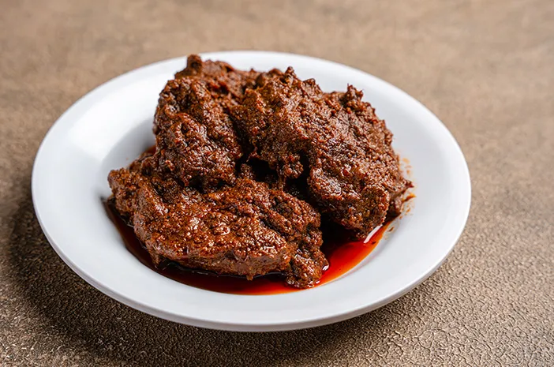

Resep Rendang
Rendang adalah masakan khas Minangkabau yang terbuat dari daging sapi yang dimasak lama dengan santan dan bumbu rempah yang kaya. Rendang memiliki rasa yang pedas, gurih, dan kaya akan rempah.
Bahan-bahan:
- 1 kg daging sapi, potong-potong
- 2 lembar daun salam
- 2 batang serai, memarkan
- 400 ml santan kental
- 5 siung bawang merah
- 3 siung bawang putih
- 3 buah cabai merah besar
- 1 sdt ketumbar bubuk
- 1 sdt kunyit bubuk
- 1/2 sdt jintan bubuk
- Garam dan gula secukupnya
Cara Membuat:
- Haluskan bawang merah, bawang putih, cabai merah, dan rempah-rempah.
- Panaskan sedikit minyak, tumis bumbu halus, daun salam, dan serai hingga harum.
- Masukkan potongan daging sapi, aduk hingga daging berubah warna.
- Tambahkan santan dan biarkan mendidih. Masak dengan api kecil hingga daging empuk dan bumbu meresap, sekitar 2-3 jam.
- Tambahkan garam dan gula secukupnya, masak hingga kuah mengental.
- Angkat dan sajikan hangat.